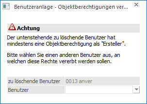
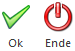

Wird ein Benutzer gelöscht, der in einem Objekt "Ersteller" Berechtigungen besitzt, so wird vor dem Löschvorgang darauf hingewiesen und die Möglichkeit geboten die "Ersteller" Berechtigungen zu vererben.

Beispiel
Der Benutzer "anver" hat eine "Ersteller" Berechtigung auf die folgenden Objekte:
¨ Meine Kunden (Liste)
¨ Kunden in Wien (Liste)
¨ Kunden in Wien (Filter)
¨ Debitoren (Vorlage)
Da diese Objekte auch von anderen Benutzern verwendet werden, sollte die "Ersteller" Berechtigung auf einen anderen Benutzer "vererbt" werden. Zum Beispiel auf einen Administrator oder den "Nachfolger" des zu löschenden Benutzers.
Ø Benutzer
An dieser Stelle kann der Benutzer ausgewählt werden, auf welchen die Ersteller-Rechte übertragen werden sollen.
Buttons

Ø Ok
Durch Anwahl des Buttons "Ok" bzw. der Taste F5 wird der Löschvorgang fortgesetzt und die Ersteller-Rechte übertragen.
Ø Ende
Durch Anwahl des Buttons "Ende" bzw. der Taste ESC wird das Fenster geschlossen und der Löschvorgang abgebrochen.